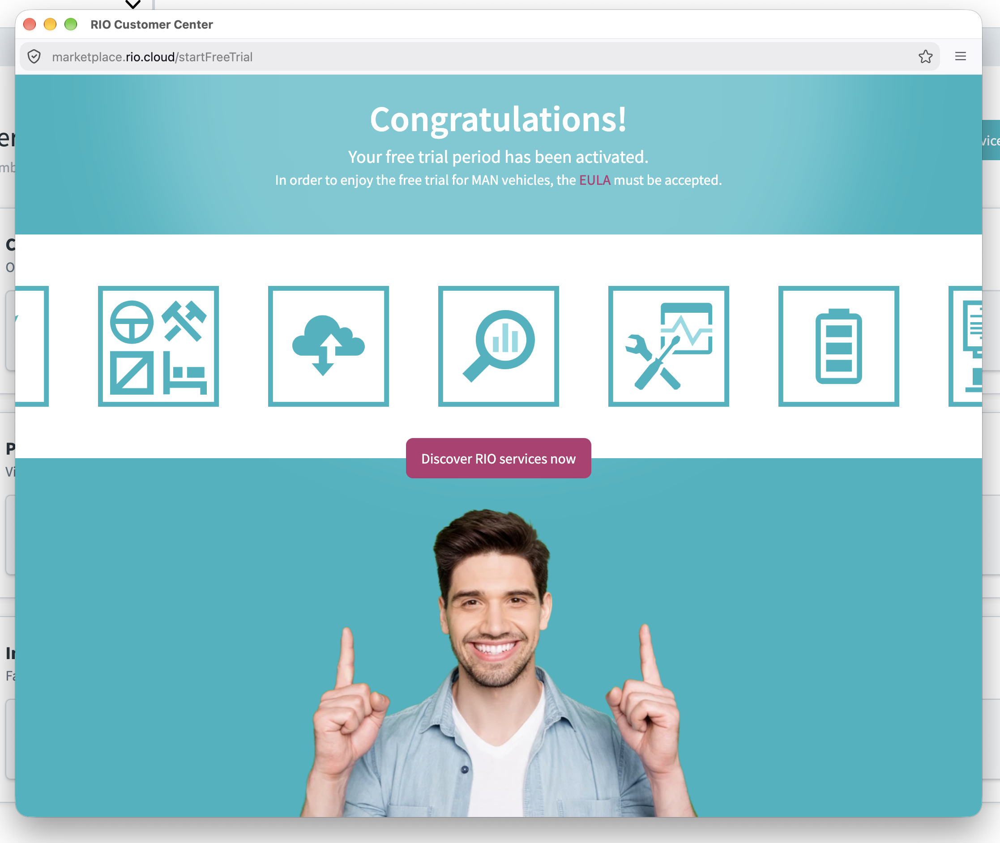

Voraussetzungen
Das benötigen Sie für den Start.
- Aktiver RIO Account
- Möglichst alle verfügbaren MAN Diesel-Lkw bei RIO aktiviert
- Admin User auf der RIO Plattform
Free Trial aktivieren
In wenigen Schritten aktivieren Sie das kostenlose Testangebot für Ihre Fahrzeuge. Diese Anleitung führt Sie durch die Anmeldung, die Fahrzeugauswahl und die Aktivierung der gewünschten Dienste.
Voraussetzungen
Öffnen Sie die RIO Plattform und melden Sie sich mit Ihrem bestehenden Benutzerkonto an.
Wenn Sie die Voraussetzungen für den Start der kostenlosen Testphase erfüllt haben, werden Sie ein großes Banner auf Ihrer Startseite sehen. Klicken Sie darauf und folgen Sie dem Prozess.

Mit wenigen Klicks haben Sie den Free Trial für all Ihre MAN Diesel-Lkw auf der RIO Plattform aktiviert. Sie können die Telematik-Dienste nun 3 Monate kostenlos testen. Und sollten Sie Fahrzeuge aus Ihrem Fuhrpark noch nicht auf der RIO Plattform aktiviert haben, so können Sie das in der Fahrzeugverwaltung Ihres RIO Accounts nachholen.

Hilfe
Sie haben Fragen oder Probleme bei der Aktivierung oder Nutzung Ihres Testangebots? Unser Support hilft Ihnen gerne weiter.
Hilfe anfordern